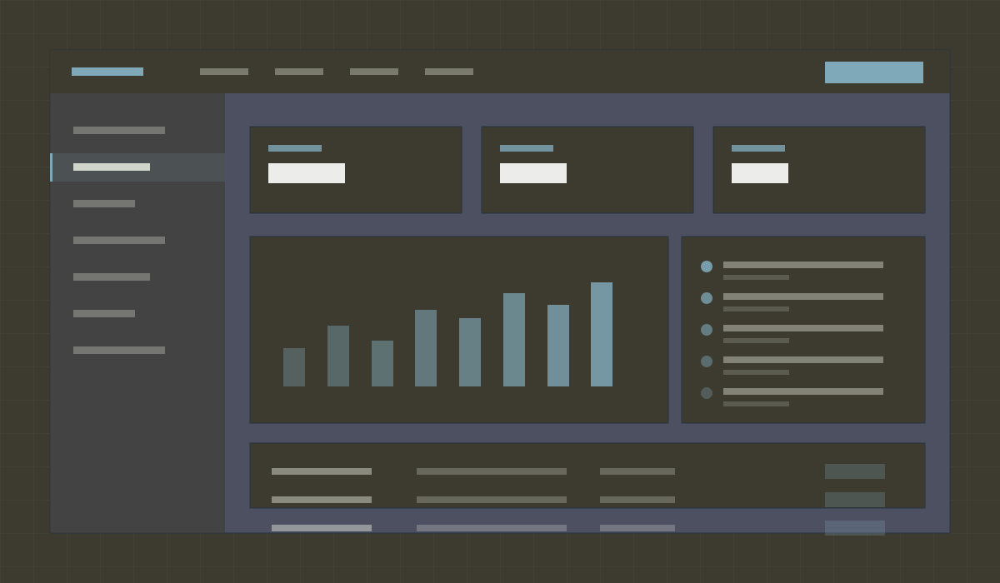
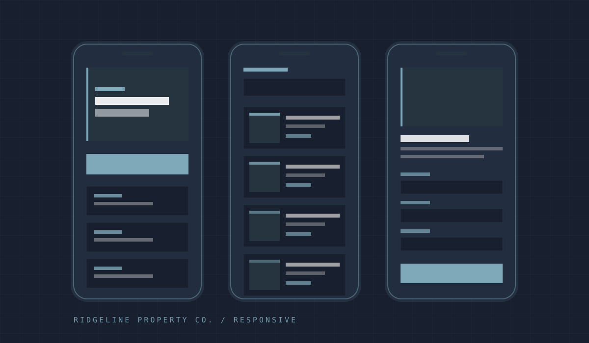

02 / Property management
A resident portal that absorbs the phone calls instead of adding a login.
Maintenance requests for 340 units arrived by text, voicemail, email, and handwritten note at the front desk. The brief was a resident portal. The research said the portal would fail unless it met residents on the channels they already used.
0 views

01 — Context
The situation
Ridgeline manages 340 units across nine small properties. Two staff members handle every maintenance request. Requests arrived through four uncontrolled channels, so the first task of every morning was reconstructing what had come in overnight.
The company had already bought a portal product once. Adoption stalled at 12% because residents would not create an account to report a running toilet, and staff ended up maintaining both the portal and the phone log.
02 — Problem
What was actually broken
- Four intake channels — Text, voicemail, email, and paper — none of them queued, none of them timestamped consistently.
- A failed portal already in the building — Any new system had to overcome active skepticism from both residents and staff.
- No status visibility — Residents called to ask where their request stood, which generated more calls than the original request.
- Photos stuck in text threads — The most useful diagnostic information lived in a staff member's personal phone.
03 — Approach
How the work was shaped
I interviewed eleven residents across three properties and both maintenance staff, then mapped the real path a request takes from noticed to fixed. The map had nine handoffs and four places where a request could silently die.
- No account required to report — A request needs a unit number and a description. Identity is confirmed by a code sent to the phone number already on the lease — the login became a side effect of reporting, not a prerequisite.
- SMS as a first-class channel — Texts to the maintenance line hit a webhook and enter the same queue as portal submissions, with photos attached. Residents who prefer texting never learn the portal exists, and staff still get one list.
- A status page with a link, not a login — Every request generates a short link. Tapping it shows exactly where the work stands — the single change that removed most status calls.
- A staff queue built for triage — Sorted by age and severity, with a two-tap acknowledge. The design assumes a phone held in one hand in a boiler room.

04 — Decisions
Three calls worth defending
- Rejected a native app — Requests are occasional. Nobody installs an app for something they do four times a year — a text and a link beat an install every time.
- Wrote the SMS copy as part of the design — The automated replies are the interface for most residents. They went through the same review as the screens, including a read-aloud pass.
- Made 'awaiting parts' a visible status — The old system hid it, so silence read as neglect. Naming the wait honestly is cheaper than being fast.
05 — System
Color and type
Archivo throughout, with mono reserved for request IDs and timestamps — the two things residents read back over the phone.
Charcoal Olive
#3D3B30
Ridge Blue
#26343f
Alpine
#7fa8b8
Lime Gold
#E7E247
Mist
#E9EDDE

06 — Outcome
What the engagement delivers
4 → 1
Intake channels consolidated into one queue
0 accounts
Required before reporting a problem
22
Components documented for reuse
AA
WCAG 2.1 AA, tested at 200% zoom
The deliverable is a portal, a staff queue, and a documented component system — but the piece that carries the value is the intake design. Every channel a resident already trusts terminates in the same place, and every request gets a link that answers the only question residents actually ask.
Reflection
The client asked for a portal. What they needed was a queue with several front doors. Building the portal without that reframing would have produced the same 12% adoption and a nicer-looking failure.